| 日付 | 2009年5月1日（金） - 2009年5月5日（火） | ||||||||||
|---|---|---|---|---|---|---|---|---|---|---|---|
| 山域 | 南アルプス | ||||||||||
| メンバー | 単独 | ||||||||||
| 山行形態 | 4泊5日テント・無人小屋泊 | ||||||||||
| アクセス | 電車、バス | ||||||||||
| ルート (Map) |
|
5日目
朝起きると外は一面真白。今日は相当に天気が悪い。
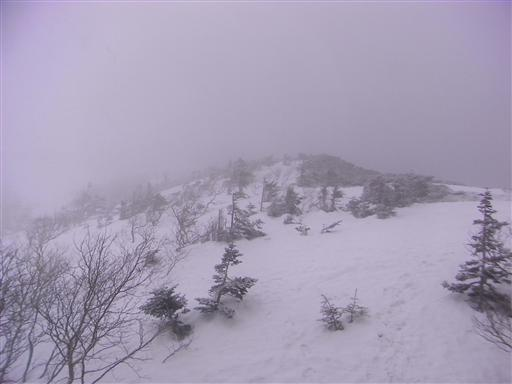
朝食をとって外に出てみると、なんと雪が降っている。
一日停滞して明日帰るという方法もあるが、明日の天気は分からない。
山行開始前の週間天気予報では6日は快晴の予報だったが、
今日の予報が既に外れているため、全くあてにはできないだろう。
こういう時のためにラジオを持ってきたが、どこで天気予報をやっているのかが分からない…
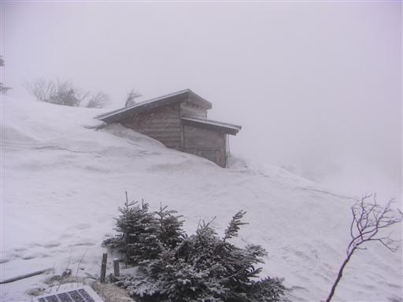
6:22 気分は乗らないが準備を整えて出発する。
雪面についた足跡は降りしきる雪によって隠されつつある。
平坦な地形、視界はなし、雪に隠された登山道と、道迷い遭難の条件は整っている。
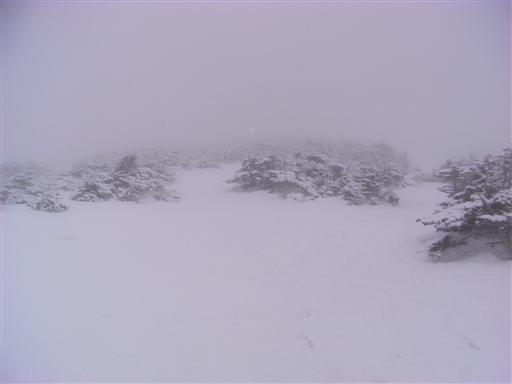
コンパスを見ながら消えゆく足跡を追っていくと谷筋の地形になり、
方々から足跡が集まってきて、一つの大きな踏み跡となる。
この辺りで単独行者とすれ違う。アイゼン装着、手にはピッケル。冬山らしい格好だ。
こちらは4本爪軽アイゼンでなんとも心もとない。
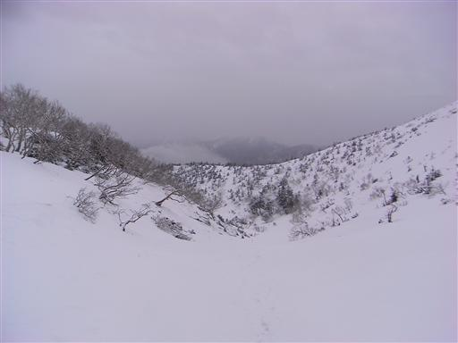
しばらく下ると雲の下に出たのか視界が開けてくる。
ぼんやりとだが遠くの景色が見えてくる。これでもう迷う心配は無くなった。
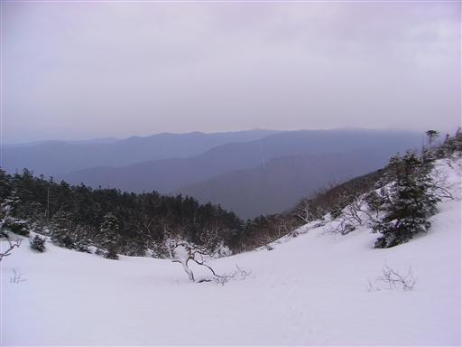
後は踏み跡を追うだけでよいと思っていたが、再び足跡はばらけてくる。
結局、地形を見ながら自分の判断で歩いていく羽目になる。
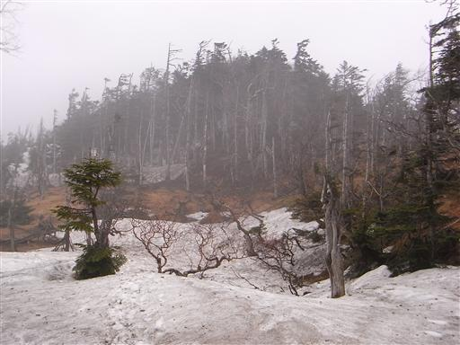
振り返るとイザルガ岳と光岳がかすかに望める。
展望がいいというイザルガ岳は、登山道から往復しなければ登れないため無視してしまった。
この天気では登っても仕方が無いだろう。
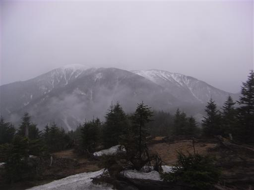
雪の上には真新しい獣の足跡が見える。
かなり大きいがクマの足跡だろうか…？

8:20 易老岳山頂到着。標高2354m。
標識は雪に埋まって、「→茶臼岳」という文字のみが見える。
茶臼岳まで行って畑薙に下るという手も考えたが、この天気では易老渡に下る方がいいだろう。
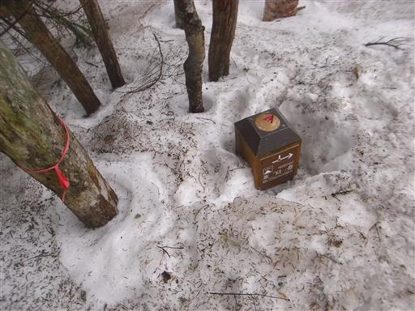
易老岳山頂のど真ん中にはテントが張られている。
途中で出会った単独行者のものだろう。
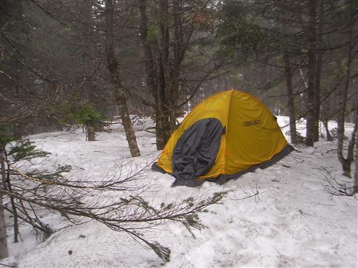
易老渡への下山道に入ると道はよく整備されていて非常に分かりやすい。
雪はだいぶ少なくなったが、雪が薄いところは凍り付いていて余計に歩きにくい。
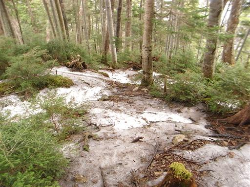
光岳へ続く主要ルートのはずだが、辺りは倒木が多く荒れた風景だ。
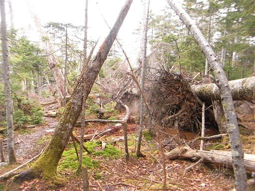
しかし登山道を塞ぐ倒木はきちんと処理されているところが、今まで歩いてきたルートとは違う。
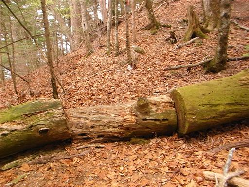
所々に標識があり、山頂までの距離が書かれている。
実際は山頂までの距離よりも、標高差の方が役に立つ情報なのだが…
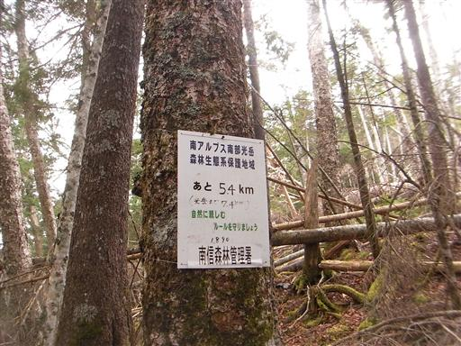
面平に到着。ずいぶん下ったがまだ道半ばだ。なんという長い下りだろう。
普段は下山中に休憩を取ることは滅多に無いが、
さすがに疲れたのでここで小休止することにする。
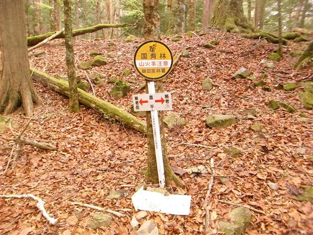
稜線で降っていた雪はこの辺りでは雨になっている。
GWの終盤にこの天気では登ってくる人などいるはずも無い。
八ヶ岳や北アルプスのテント場は足の踏み場も無い状態だろうが、
この山域はGWでもずいぶんと静かだ。
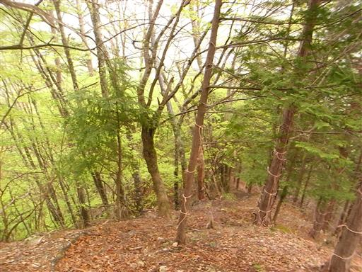
11:07 易老渡に到着。ようやく下山だ。
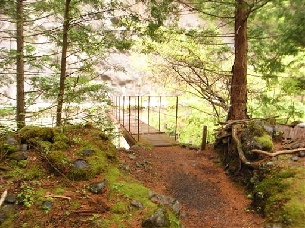
光岳の登山道入口には光小屋の注意書きがある。
遠くからの縦走者か、50歳以上の人にしか食事は出しませんと書かれている。
なかなかユニークな試みだ。比較的評判の悪い南アの小屋の中で、
この小屋は数少ない評判の非常に良い小屋だ。
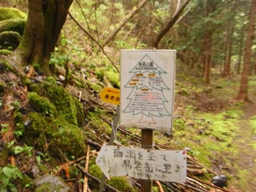
橋は古い板が破れて下が見えている。
板が割れて落下というのが一番嫌なパターンだ。
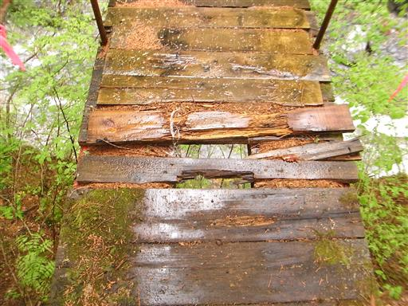
橋から遠山川を望む。比較的広い谷で、高度感は全く無い。
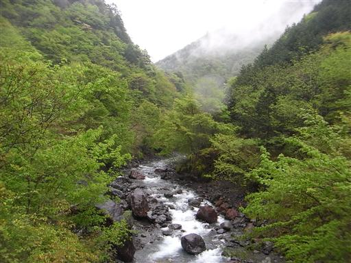
下山はしたが、これで終わりではない。
ここからバス停まで、なんと20kmに及ぶ車道歩きが待っている。
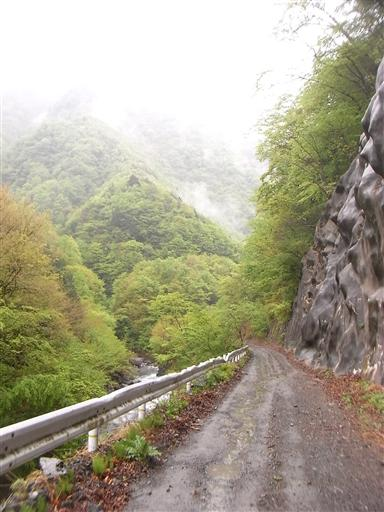
道路は舗装されている部分もあれば、砂利の部分もある。
辺りは緑色に包まれて非常に美しい。
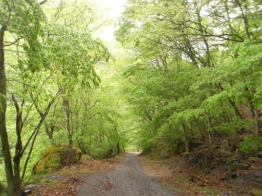
遠山川沿いに一直線に下る旧道は危険らしいので、
車道をそのまま歩いていくがそれが大失敗。
下山なのに車道はどんどん標高を上げていき、川は下方に消えてしまった。
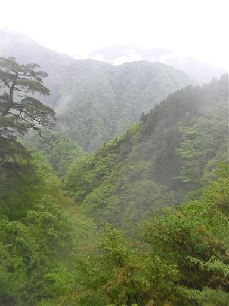
栃の巨木見学の案内標識があるので見に行くことにする。
樹高40m、幹回り10.5mだそうだ。
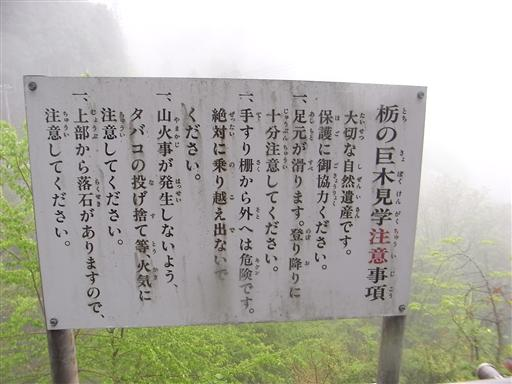
下を覗くと、階段が下方へ伸びている。どのくらい下ると栃の木があるのだろうか？
案内標識にはどうでもいいことばかり書かれていて、肝心なことは書かれていない。
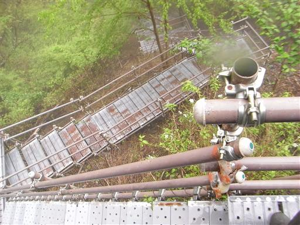
上からは見えなかったが、3分も下ると栃の木に出会えた。
桁外れに大きいというわけではないが、立派な姿だ。
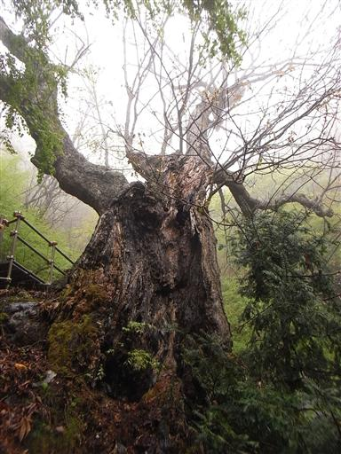
車道は標高665mの川沿いから、一気に標高1000mまで登って行く。
小さい山一つ分だ。そしてその最上部に集落がある。
集落があるからこんな非効率な道ができたのか、道があるから集落ができたのか…
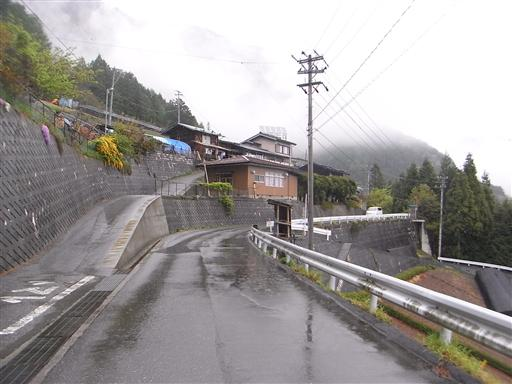
車道からは絶景が広がる。晴れていれば南アルプス主稜線まで見渡せるだろう。
易老渡からずいぶん歩いたが、まだまだ山奥深い。
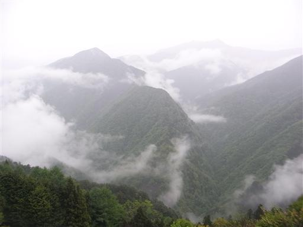
15:05 上島バス停到着。標高520m。
起伏のある長い長い車道、強くなる一方の雨足、最後の車道歩きは過酷だった。
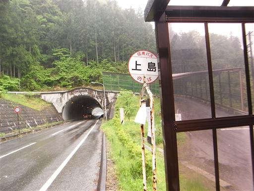
バスに乗って飯田駅に到着。
あれだけ長い車道を歩いたのに、バスに乗ってからも山間をひた走り、
伊那山地を貫く4kmものトンネルを越え、1時間15分かかってようやく到着した。
南アルプスの巨大さを実感する。
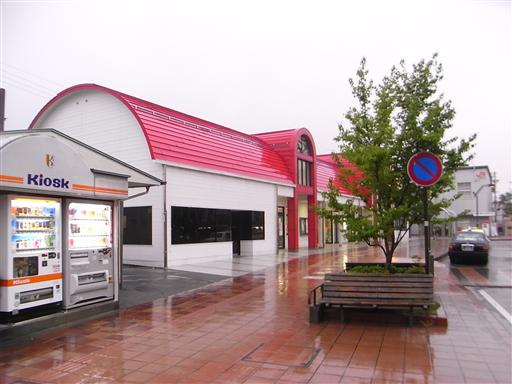
階段には「かけ込み乗車は危険です 次の電車をご利用下さい」と書かれている。
多くの駅で見られる文言だが、1時間に1本しかない飯田線で書く言葉ではないだろう…
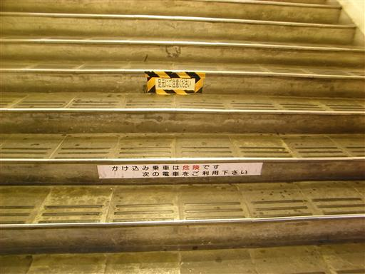
線路は当然単線だ。相変わらず雨は激しい。
今回の山行は寸又峡温泉から易老渡まで4泊5日、出会った人は4パーティ5人。
GWであるにも関わらず極めて静かな山行だった。
次にこの縦走路を歩き通す人が現れるのはいつになるのだろう…
天気予報を調べると、明日の天気も大雨となっていた。
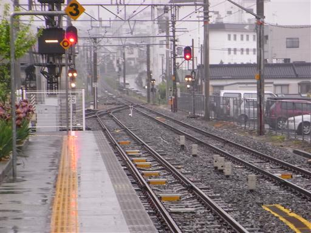